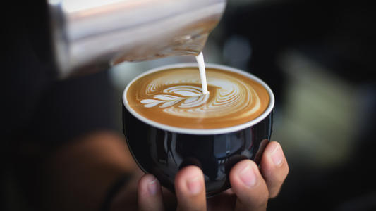

这是我的右边框框
| 单品 | 价格 |
|---|---|
| 牛奶 | 30.00 |
| 咖啡 | 25.00 |
| 水果 | 21.00 |
牛奶是最古老的天然饮料之一，被誉为白色血液。
牛奶中含有丰富的蛋白质、脂肪、维生素和矿物质等营养物质，乳蛋白中含有人体所必须的氨基酸； 乳脂肪多为短链和中链脂肪酸，极易被人体吸收；钾、磷、钙等矿物质配比合理，易于人体吸收。
山羊奶、牛奶和人奶的总体组成相似，都是由蛋白质、脂肪、乳 山羊奶与牛奶和人奶总营养成分的比较 山羊奶与牛奶和人奶总营养成分的比较 糖、矿物质及水组成的复合胶体溶液。3种奶中脂肪、水和热量接近，但在蛋白质、乳糖和矿物质含量上有一定差别。山羊奶和牛奶蛋白质含量接近，但明显高于人奶，是人奶的2～3倍；山羊奶和牛奶中含有较少乳糖，而人奶中乳糖含量较高，乳糖对婴幼儿智力发育有重要的作用；山羊奶和牛奶中矿物质含量较高，是人奶的3～4倍，但是矿物质含量过高会增加婴幼儿的肾脏负担。
1.意大利式拿铁
拿铁咖啡需要一小杯意大利浓缩咖啡和一杯牛奶，拿铁咖啡中牛奶多而咖啡少。拿铁咖啡做法极其简单， 就是在刚刚做好的意大利浓缩咖啡中倒入接近沸腾的牛奶。一般的拿铁咖啡的成分是三分之一的意式浓缩咖啡Espresso加三分之二的蒸鲜奶， 一般不加入奶泡。它与卡布奇诺Cappuccino相比，有更多鲜奶味道。发展2019年，事实上，加入多少牛奶没有一定的规定， 可依个人口味自由调配。
2.冰拿铁咖啡
利用果糖与牛奶混合增加牛奶的比重，使它与比重较轻的咖啡不会混合，成为黑白分明的两层，形成如鸡尾酒般曼妙的视觉效果，再加上冰块，给人一种高雅而浪漫的温馨感觉。 按热鲜奶，浓缩咖啡奶泡的顺序往杯中倒，是为了制造分层效果，一般来说，以浓缩咖啡为底。再倒入热鲜奶、奶泡制作比较容易，可利用汤匙辅助倒入。 拿铁咖啡可加入各种加味果露，以变化口味。如焦糖、榛果、法式香草等。添加的方式是先往杯中加15毫升加味果露，再依照上述步骤加入原料即可。
3.牛奶制品

牛乳及其制品是膳食中蛋白质、钙、磷、维生素A、维生素D和维生素B2的重要来源之一 鲜乳主要是由水、脂肪、蛋白质、乳糖、矿物质、维生素等组成的一种复杂乳胶体，其中水分含量占86%~90%，因此其营养素含量与其他食物比较相对较低。牛乳的比重平均为1.032， 比重大小与乳中固体物质含量有关。乳的各种成分除脂肪含量变动相对较大外，其他成分基本稳定，故比重可作为评定鲜乳质量的简易指标。